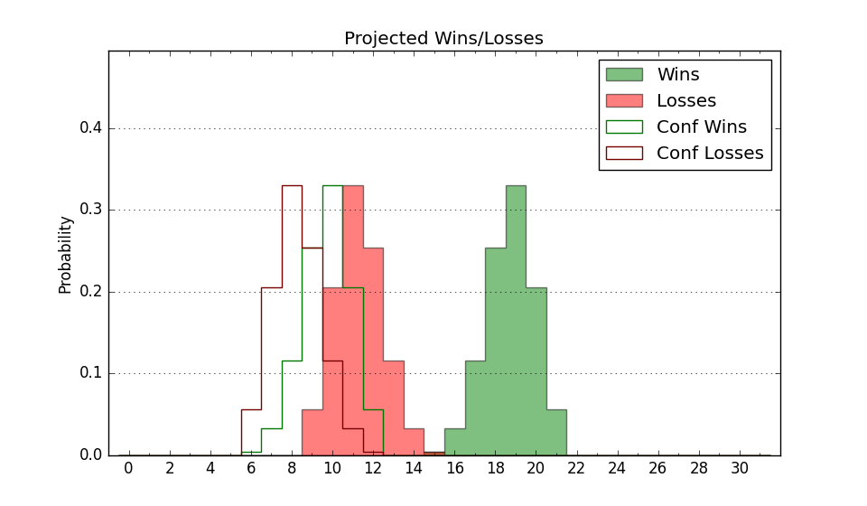

| Home | Game Probabilities | Conferences | Preseason Predictions | Odds Charts | NCAA Tournament |
| City: | Fort Myers, Florida | |
| Conference: | Atlantic Sun (10th)
| |
| Record: | 4-6 (Conf) 13-9 (Overall) | |
| Ratings: | Comp.: 2.4 (138th) Net: 2.6 (139th) Off: 103.6 (144th) Def: 101.0 (150th) SoR: 0.1 (142nd) |
| Remaining | ||||||
|---|---|---|---|---|---|---|
| Date | Opponent | Win Prob | Pred. | |||
| 2/2 | Central Arkansas (340) | 92.6% | W 84-65 | |||
| 2/4 | North Alabama (293) | 87.3% | W 80-66 | |||
| 2/9 | @ North Florida (291) | 66.5% | W 76-71 | |||
| 2/11 | @ Jacksonville (204) | 46.9% | L 62-63 | |||
| 2/15 | @ Stetson (187) | 43.3% | L 69-71 | |||
| 2/18 | Stetson (187) | 72.2% | W 73-67 | |||
| 2/22 | Lipscomb (196) | 73.7% | W 74-67 | |||
| 2/24 | Austin Peay (310) | 89.7% | W 73-59 | |||
| Previous | Game Score | |||||
| Date | Opponent | Win Prob | Result | Off | Def | Net |
| 11/7 | @USC (48) | 12.8% | W 74-61 | 10.6 | 26.3 | 36.9 |
| 11/9 | @San Diego (198) | 45.4% | L 73-79 | -6.8 | 2.8 | -4.1 |
| 11/16 | @Tennessee (2) | 2.5% | L 50-81 | -2.9 | -9.1 | -12.0 |
| 11/21 | (N) Northern Kentucky (213) | 64.6% | W 82-61 | 17.7 | 4.0 | 21.8 |
| 11/22 | (N) Drexel (189) | 59.0% | W 67-59 | -1.1 | 9.3 | 8.2 |
| 11/23 | (N) UMKC (252) | 72.3% | W 73-59 | 15.9 | 2.9 | 18.8 |
| 11/30 | @Georgia Southern (229) | 53.9% | W 70-53 | 11.4 | 13.2 | 24.6 |
| 12/4 | FIU (243) | 81.7% | W 74-65 | -1.8 | 2.0 | 0.2 |
| 12/7 | @Florida Atlantic (32) | 9.8% | L 53-85 | -5.3 | -27.9 | -33.2 |
| 12/10 | Mercer (220) | 78.7% | W 67-62 | -9.6 | 4.4 | -5.2 |
| 12/16 | @St. Bonaventure (169) | 40.1% | W 71-58 | 14.1 | 11.9 | 26.0 |
| 12/21 | Canisius (284) | 86.4% | W 84-81 | 10.1 | -26.6 | -16.5 |
| 12/31 | Jacksonville (204) | 75.1% | W 72-65 | 15.7 | -6.5 | 9.2 |
| 1/2 | @Central Arkansas (340) | 78.7% | W 84-79 | -10.1 | 4.0 | -6.1 |
| 1/5 | @Austin Peay (310) | 72.0% | L 59-61 | -10.8 | 1.4 | -9.4 |
| 1/7 | North Florida (291) | 87.1% | W 82-57 | -2.7 | 18.0 | 15.2 |
| 1/12 | @Eastern Kentucky (194) | 44.5% | L 76-97 | 2.2 | -26.2 | -24.0 |
| 1/14 | @Bellarmine (263) | 61.3% | L 41-61 | -39.0 | 4.2 | -34.8 |
| 1/19 | Jacksonville St. (294) | 87.4% | W 55-51 | -25.6 | 17.1 | -8.5 |
| 1/21 | Kennesaw St. (136) | 64.0% | L 63-65 | 1.6 | -6.3 | -4.7 |
| 1/26 | @Queens (216) | 50.2% | L 82-84 | 8.8 | -15.1 | -6.3 |
| 1/28 | @Liberty (57) | 14.2% | L 57-74 | 3.8 | -3.9 | -0.1 |
| Stats & Trends | |||||
|---|---|---|---|---|---|
| Current | Day | Week | Month | Season | |
| Composite | 2.4 | -0.0 | -0.0 | -4.5 | +6.6 |
| Comp Rank | 138 | -- | +5 | -37 | +68 |
| Net Efficiency | 2.6 | -0.0 | -0.2 | -6.7 | -- |
| Net Rank | 139 | -- | +3 | -51 | -- |
| Off Efficiency | 103.6 | +0.0 | +0.4 | -6.6 | -- |
| Off Rank | 144 | -2 | -- | -102 | -- |
| Def Efficiency | 101.0 | -0.0 | -0.6 | -0.0 | -- |
| Def Rank | 150 | +1 | -3 | +19 | -- |
| SoS Rank | 195 | +1 | +54 | -63 | -- |
| Exp. Wins | 18.7 | -0.0 | -0.6 | -3.9 | +4.2 |
| Exp. Conf Wins | 9.7 | -0.0 | -0.6 | -3.9 | +0.1 |
| Conf Champ Prob | 0.0 | -- | -0.3 | -40.6 | -7.9 |

| Advanced Stats | ||
|---|---|---|
| Stat | Value | Rank |
| Off Eff FG % | 0.501 | 188 |
| Off Ast Ratio | 0.138 | 210 |
| Off ORB% | 0.274 | 170 |
| Off TO Rate | 0.159 | 198 |
| Off FT Ratio | 0.293 | 248 |
| Def Eff FG % | 0.501 | 167 |
| Def Ast Ratio | 0.146 | 212 |
| Def ORB% | 0.272 | 202 |
| Def TO Rate | 0.151 | 224 |
| Def FT Ratio | 0.306 | 162 |